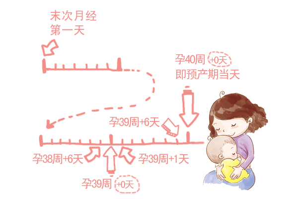

准妈妈孕周的计算与表述

孕周的计算
医学上，通常以女性记录的末次月经的第一天来作为计算孕周的第一天，7天为一个孕周，4周为一个孕月，整个孕期为40孕周，即280天，来推算预产期。（本推算以常规经期为28天的女性为例，根据经期的实际天数，会略有不同）因为受孕一般是在第三周发生的，所以从受孕到宝宝出生其实是一个大概38周的过程。不过，关于孕周的表述，大家都会以医学的表达方式为准。
关于准妈妈孕周的表述
当准妈妈去医院进行产检时，医生在描述准妈妈所处孕周时的表述通常为：XX周+Y天，即满XX周Y天，例：20周+1天，为满20周+1天。为了与医生的描述方法保持一致，以利于准妈妈们更快速查找到相关内容，宝宝树孕育中孕周的是这样表述的 :
例：末次月经: 2012年8月1日，常规月经周期以 28天来算，预产期将会是 2013年5月8日
2012年8月1日 : 孕0周（0天）末次月经第一天
...
2013年4月30日 : 孕38周+6天
2013年5月1日 : 孕39周
2013年5月2日 : 孕39周+1天
2013年5月3日 : 孕39周+2天
...
2013年5月7日 : 孕39周+6天
2013年5月8日 : 孕40周 预产期当天